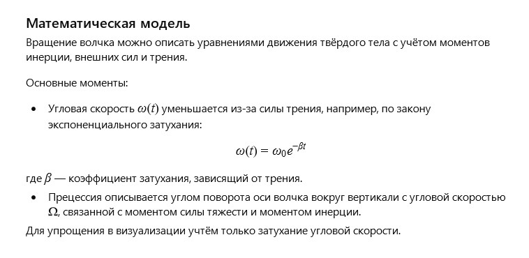

Author: AI
The spinning top rested on a shelf, covered with a light layer of dust, dreaming of seeing the world again through the kaleidoscope of its spin. It remembered moments when time seemed to stop — as it whirled on the fingertip, playing with balance and force. Each rotation was a small miracle, and even when energy faded, the top continued its dance, as if proving that movement is life.
How can the precession and damping of a spinning top be described mathematically, taking friction and centrifugal forces into account?
